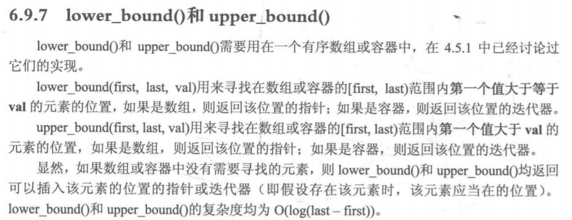

2019-05-17
00:51:23
https://www.cnblogs.com/ECJTUACM-873284962/p/6361271.html
终于比大佬多了解了点

1 #include<bits/stdc++.h>
2 using namespace std;
3 int main()
4 {
5 int a[100];
6 int i,j;
7 int n;
8 scanf ("%d", &n);
9 for (i = 0; i < n; i++)
10 {
11 scanf("%d", &a[i]);
12 }
13 int x;
14 scanf ("%d", &x);
15 cout << lower_bound(a, a + n, x) - a; //从0开始
16 cout << upper_bound(a, a + n, x) - a;
17 return 0;
18 }